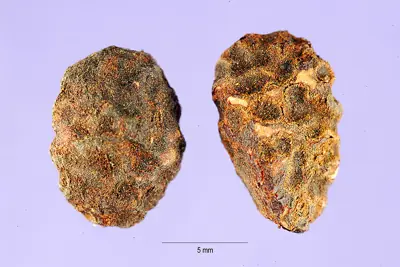

pranet · 出典付きの植物図鑑
white rubber vine
Landolphia owariensis P.Beauv. · Apocynaceae

Landolphia owariensis is a species of liana from the family Apocynaceae found in tropical Africa. Latex can be extracted from this plant for the manufacture of natural rubber. Other names for this vine are eta, the white rubber vine and the Congo rubber plant. Congo rubber was a commercial rubber exported from the Congo Free State starting in 1890, most notable for its forced harvesting under conditions of great human suffering, in the Congo Free State, detailed in the 1904 Casement Report. From 1885 to 1908, millions perished as a result of execution, forced labor, famine, and disease, while birth rates rapidly declined, with population falling by millions in this period; some writers estimate this loss to be as high as 10 million people.
出典: Wikipedia (en): Landolphia owariensis · CC BY-SA 4.0
異名: Landolphia droogmansiana De Wild., Landolphia gentilii De Wild., Landolphia glaberrima A.Chev., Landolphia humilis Schltr. ex Cheval., Landolphia leiocalyx Pichon, Landolphia mayumbensis R.D.Good, Landolphia miegeana A.Chev., Landolphia pierrei Hua, Landolphia stapfiana Wernham, Landolphia stolzii Busse, Landolphia tomentella (Stapf) A.Chev., Landolphia turbinata Stapf ex A.Chev., Pacouria owariensis (P.Beauv.) Hiern, Paederia owariensis (P.Beauv.) Spreng., Vahea owariensis (P.Beauv.) F.Muell.
同定や利用は自己責任でお願いします。この図鑑だけを根拠に野生の植物を食べないでください。
出典
- 学名: World Flora Online Plant List 2026-06 · CC0 1.0
- 名前: Wikipedia の記事名と Wikidata · CC0 1.0（Wikidata）。記事名は事実
- 説明: Wikipedia (en): Landolphia owariensis · CC BY-SA 4.0
- 食用・毒性: World Checklist of Useful Plant Species (Diazgranados et al. 2020, RBG Kew) · CC BY 4.0
- 分布: World Checklist of Vascular Plants (WCVP), RBG Kew, version 2026-06-04 · CC BY 3.0
このページは pranet のデータから自動生成しています。コードは MIT、データは項目ごとのライセンス（説明）。